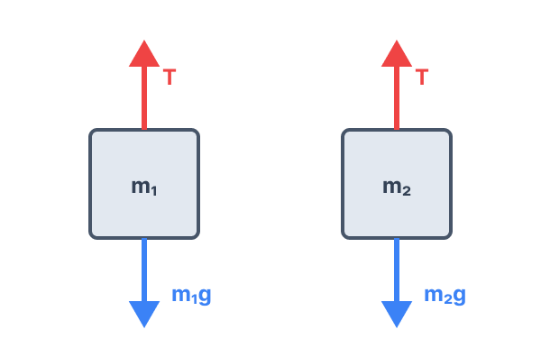
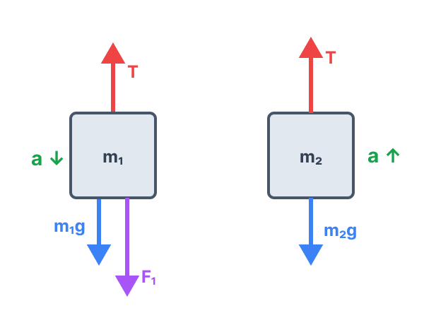
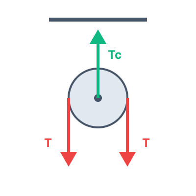
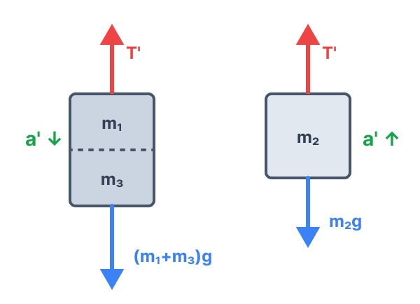

סעיף א': מציאת מסת גוף 2
א. מה נתון:
- מסת גוף 1 מנתוני השאלה: \( m_1 = 0.5 \text{ kg} \). היחידות כבר בשיטת MKS התקנית.
- מתוך גרף המהירות-זמן, החל מרגע \( t = 6 \text{ s} \) ועד \( t = 12 \text{ s} \), גודל המהירות של גוף 1 הוא קבוע ועומד על \( v = 30 \text{ m/s} \).
- החל מרגע \( t = 6 \text{ s} \) הכוח החיצוני \( F_1 \) מפסיק לפעול.
- תאוצת הכובד: \( g = 10 \text{ m/s}^2 \).
ב. מה מחפשים:
את ערכה של המסה \( m_2 \).
ג. נוסחאות בשימוש:
ד. הצבה ופתרון:
מכיוון שהחל מרגע \( t = 6 \text{ s} \) וקטור המהירות קבוע (גם הגודל וגם הכיוון אינם משתנים), התאוצה של המערכת היא אפס (\( a = 0 \)). נשרטט תרשים כוחות עבור כל גוף במצב זה:

נבחר ציר עבודה בהתאם לכיוון התנועה של המערכת: כלומר, ציר חיובי מטה עבור גוף 1, וציר חיובי מעלה עבור גוף 2. מכיוון שהתאוצה היא אפס, שקול הכוחות על כל גוף מתאפס. נרשום את משוואות הכוחות:
משתי המשוואות נובע בבירור כי המתיחות שווה למשקל של כל אחד מהגופים, ולכן משקלי הגופים שווים. מכאן שהמסות זהות:
סעיף ב': חישוב גודל הכוח \( F_1 \)
א. מה נתון:
- בפרק הזמן של \( 0 \le t \le 6 \text{ s} \) הכוח \( F_1 \) פועל כלפי מטה על גוף 1.
- מתוך הגרף, ברגע \( t = 0 \) המהירות היא \( v_0 = 0 \).
- ברגע \( t = 6 \text{ s} \) המהירות היא \( v = 30 \text{ m/s} \) (הגרף עולה בקו ישר, לכן התנועה היא שוות-תאוצה).
- מסת שני הגופים ידועה כעת: \( m_1 = m_2 = 0.5 \text{ kg} \).
ב. מה מחפשים:
את גודלו של הכוח החיצוני \( F_1 \) הפועל על גוף 1.
ג. נוסחאות בשימוש:
ד. הצבה ופתרון:
תחילה נחשב את התאוצה של המערכת בפרק הזמן שבו פועל הכוח. מכיוון שהגרף מתאר מהירות בציר שמכוון כלפי מטה, שיפוע הגרף ייתן לנו את התאוצה.
התאוצה היא חיובית לפי הגרף, כלומר תאוצתו של גוף 1 היא כלפי מטה בשיעור של \( 5 \text{ m/s}^2 \), וכתוצאה מכך תאוצתו של גוף 2 היא באותו גודל אך כלפי מעלה. נשרטט את הכוחות:

כעת נרשום את משוואת החוק השני של ניוטון עבור כל גוף בנפרד, בדיוק כפי שעשינו בסעיף הקודם: נשתמש בציר החיובי בכיוון תנועתו של כל גוף (לגוף 1 מטה, ולגוף 2 מעלה).
(2) גוף 2 (חיובי מעלה): \( T - m_2 g = m_2 a \)
בזכות בחירת הצירים העקבית שלנו, כדי לבטל את הנעלם \( T \), פשוט נחבר את שתי המשוואות יחד באופן אלגברי:
נציב את הנתונים המספריים: \( m_1 = 0.5 \), \( m_2 = 0.5 \), \( g = 10 \), \( a = 5 \):
סעיף ג': המתיחות בחוט b
א. מה נתון:
- מתוך החישובים הקודמים, ידועה לנו תאוצת המערכת ב-6 השניות הראשונות: \( a = 5 \text{ m/s}^2 \).
- מסת גוף 2 היא \( m_2 = 0.5 \text{ kg} \).
- חוט b הוא החוט המחבר בין שני הגופים. המתיחות בו סומנה כ- \( T \).
ב. מה מחפשים:
את גודל כוח המתיחות \( T \) בחוט b.
ג. נוסחאות בשימוש:
ד. הצבה ופתרון:
נשתמש במשוואת החוק השני של ניוטון עבור גוף 2, שרשמנו בסעיף הקודם. בחרנו במשוואה זו מכיוון שהיא פשוטה יותר ואינה כוללת את \( F_1 \):
נבודד את המתיחות \( T \):
נציב את הנתונים: \( m_2 = 0.5 \text{ kg} \), \( a = 5 \text{ m/s}^2 \), \( g = 10 \text{ m/s}^2 \):
סעיף ד': המתיחות בחוט c
א. מה נתון:
- המתיחות בחוט b (משני צידי הגלגלת) ידועה כעת: \( T = 7.5 \text{ N} \).
- חוט c מחזיק את הגלגלת כולה המחוברת לתקרה. נסמן את המתיחות בו כ- \( T_c \).
- מסתו של חוט וגלגלת בבעיות בגרות (אלא אם נאמר אחרת) נחשבת לזניחה (\( m = 0 \)).
ב. מה מחפשים:
את גודל כוח המתיחות \( T_c \) בחוט c המחבר את הגלגלת לתקרה.
ג. נוסחאות בשימוש:
ד. הצבה ופתרון:
נשרטט את תרשים הכוחות הפועלים על הגלגלת עצמה. חוט c מושך את הגלגלת כלפי מעלה בכוח \( T_c \). חוט b (הכרוך על הגלגלת) מושך את הגלגלת כלפי מטה משני צדדיה בכוח \( T \).

מכיוון שהגלגלת חסרת מסה (\( m = 0 \)), שקול הכוחות עליה חייב להיות שווה לאפס תמיד (שכן \( \Sigma F = 0 \cdot a = 0 \)). לכן הכוח שמושך מעלה חייב לאזן בדיוק את הכוחות שמושכים מטה.
נציב את הערך של \( T \) שמצאנו:
סעיף ה': האם הגרף יישאר זהה?
א. מה נתון:
- המערכת במצב מנוחה. מדביקים לגוף 1 גוף נוסף, גוף 3.
- המשקל של גוף 3 זהה בגודלו לכוח \( F_1 \), כלומר: \( W_3 = F_1 = 5 \text{ N} \).
- מכאן נחשב את מסתו של גוף 3: \( m_3 = \frac{W_3}{g} = \frac{5}{10} = 0.5 \text{ kg} \).
- המשקל המשותף בצד שמאל מושך מטה, והמערכת משוחררת מנוחה.
ב. מה מחפשים:
לקבוע האם גרף המהירות-זמן של גוף 1 בשש השניות הראשונות בתרחיש החדש יהיה זהה לגרף ב, שונה ממנו, ולנמק.
ג. נוסחאות בשימוש:
ד. הצבה ופתרון:
בגרף הנתון (גרף ב'), שיפוע הגרף מייצג את תאוצת המערכת ב-6 השניות הראשונות, והיא הייתה \( a = 5 \text{ m/s}^2 \). כדי לדעת אם הגרף יהיה זהה, עלינו לבדוק אם התאוצה החדשה (נסמן אותה \( a' \)) תהיה זהה לתאוצה המקורית.
במצב החדש, נרשום את משוואות החוק השני של ניוטון עבור המערכת. בצד אחד של הגלגלת יש לנו כעת את המסה המשותפת \( m_1 + m_3 \), ובצד השני את המסה \( m_2 \).

צד ימין (חיובי מעלה): \( T' - m_2 g = m_2 a' \)
נחבר שוב את שתי המשוואות כדי לבטל את המתיחות \( T' \):
שימו לב למשמעות הפיזיקלית: הכוח המניע נטו נשאר בדיוק כפי שהיה במצב הראשון (\( 5 \text{ N} \)), אך כעת המסה הכוללת שצריך להאיץ גדולה יותר! נציב את הנתונים כדי למצוא את \( a' \):
תאוצת המערכת כעת היא \( \approx 3.33 \text{ m/s}^2 \), בעוד שקודם היא הייתה \( 5 \text{ m/s}^2 \). מכיוון שהתאוצה קטנה יותר, שיפוע גרף המהירות-זמן יהיה מתון (קטן) יותר.